A junior developer role
During my internship, working on real features with a team.
Saved on this device.
Open to internship and junior developer roles
Hi, I'm
4th-year BSIT student at NEUST. I build web apps and show you the proof, from a job-matching capstone to small tools you can try right now.
assets/formal.jpg.
Our capstone, EmploySmart, is a job-placement platform that matches local jobseekers with employers. I worked on it with my capstone team.
Outside the capstone I built SkillMatch, Talk Booth, FocusFlow and six more small web apps: StudyMate, TapIn, ScamShield, SagipAlert, TindaTrack and Kalma. They run in the browser. They use plain HTML, CSS and JavaScript, plus the Canvas, Web Speech and MediaRecorder APIs.
I'm in my internship year and ready to contribute.
During my internship, working on real features with a team.
Experienced developers whose feedback makes my code better.
Like matching local jobseekers with the employers who need them.
One team capstone and nine apps I built on my own. Filter by technology, or open a live demo right here.
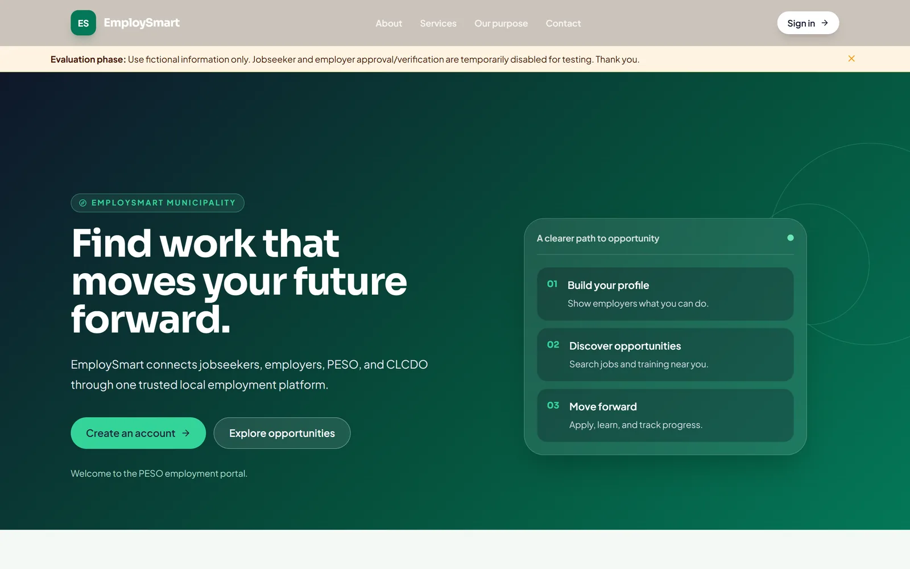
Capstone, with my team
A job-placement platform that connects jobseekers, employers, PESO and CLCDO through one local employment platform.
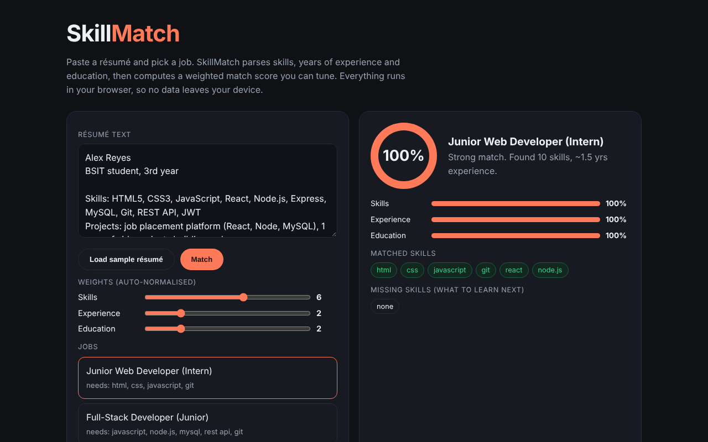
Side project
Paste a résumé, pick a job, see exactly why you match.
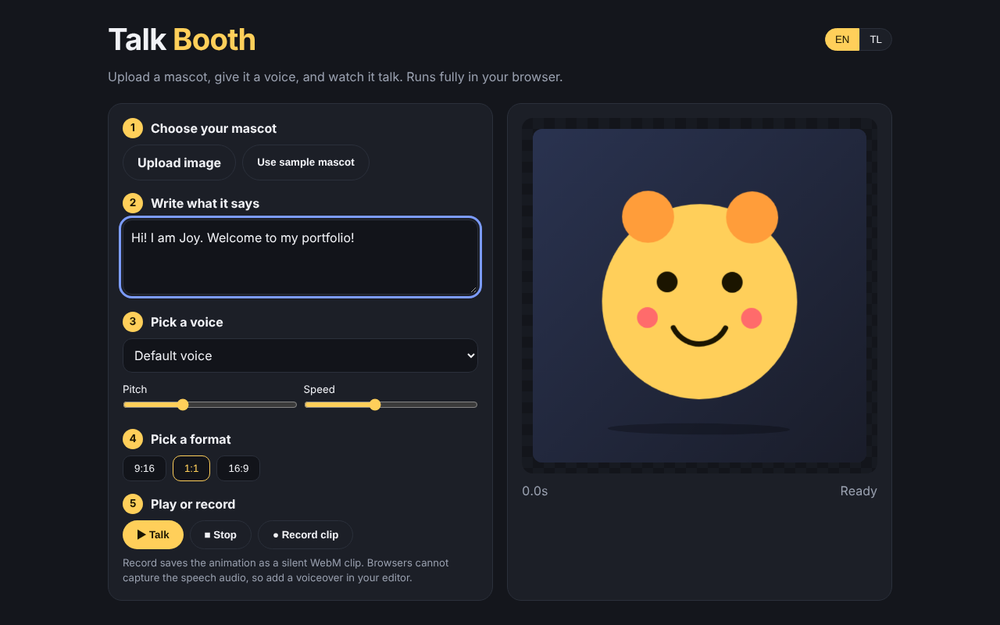
Creative tool
Upload a mascot, write what it says, and watch it talk.
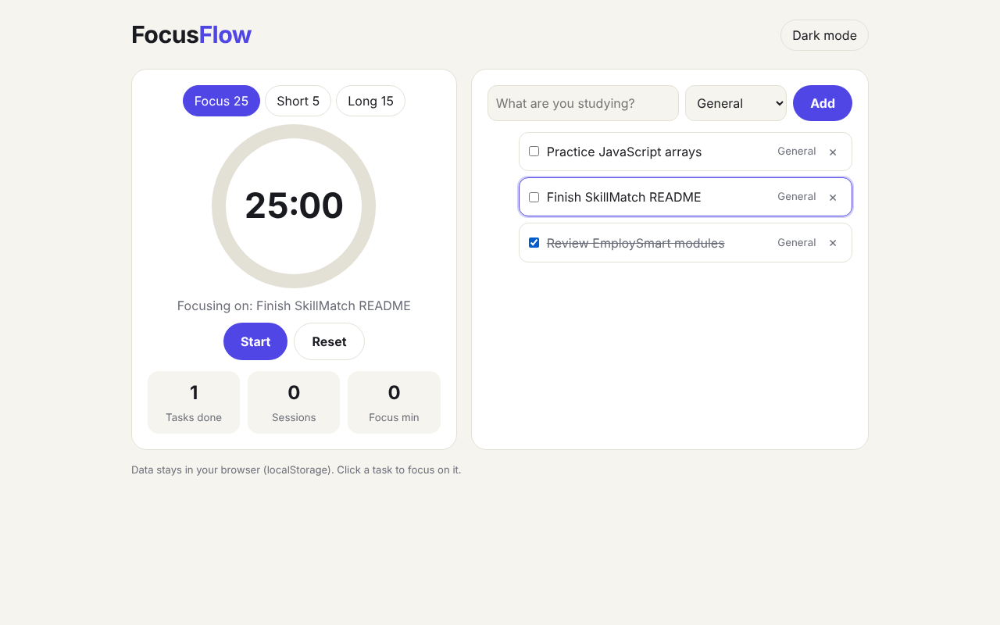
Productivity
A study planner with a Pomodoro timer built in.
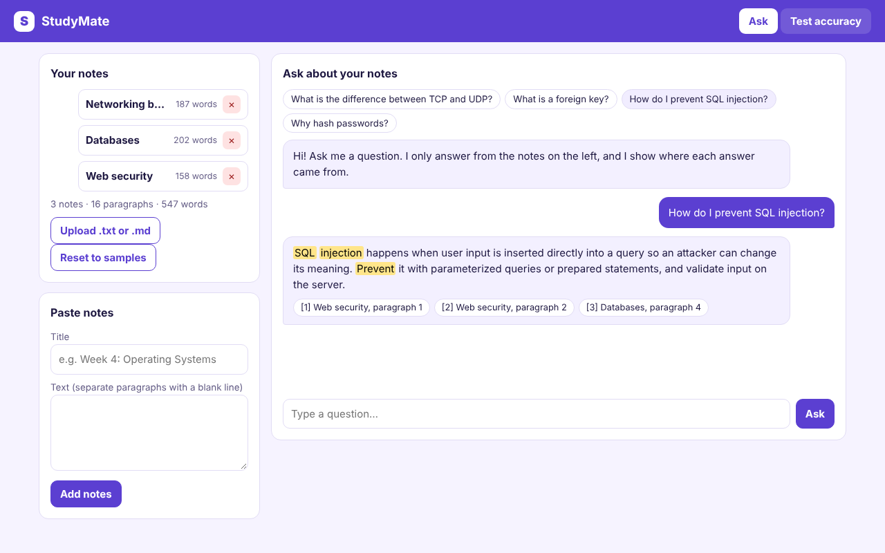
AI study tool
Ask questions about your own lecture notes and get cited answers.
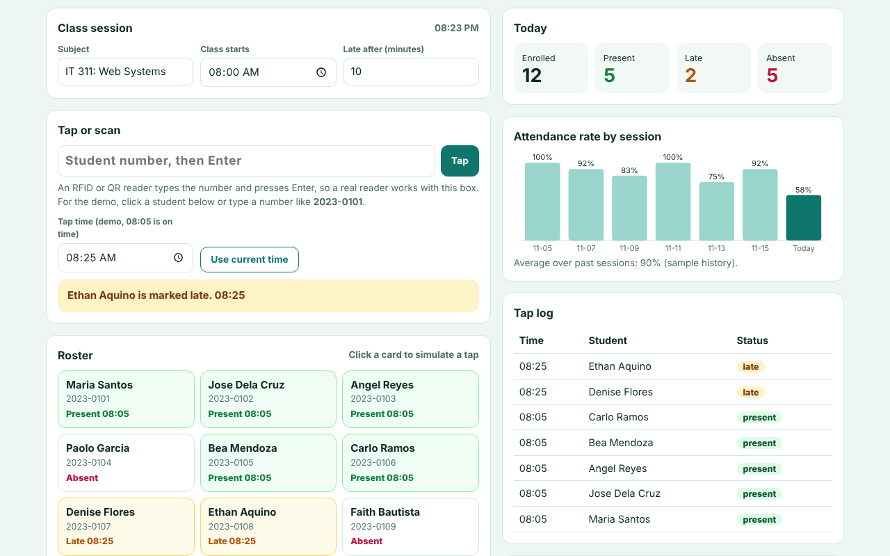
Campus tech
Classroom attendance by ID tap or QR, with automatic late and absent marking.
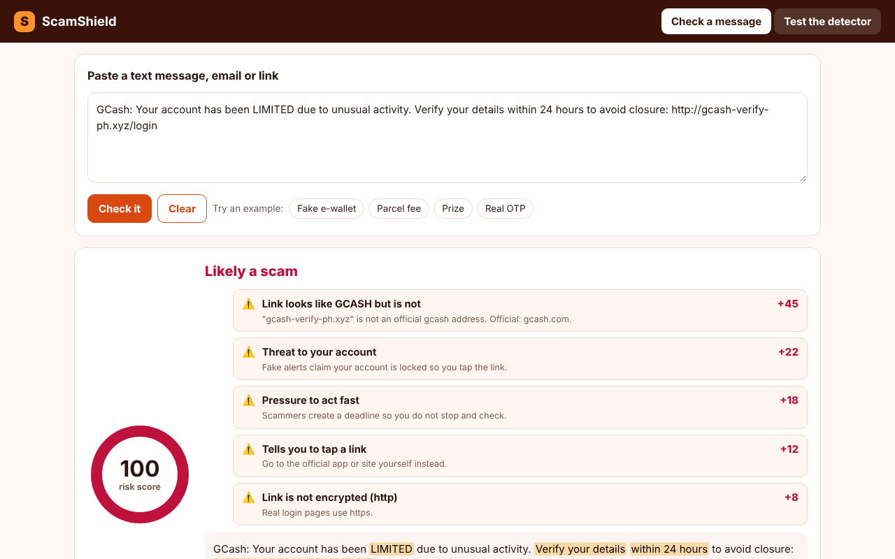
Cybersecurity
Paste a text or link and see exactly why it looks like a scam.
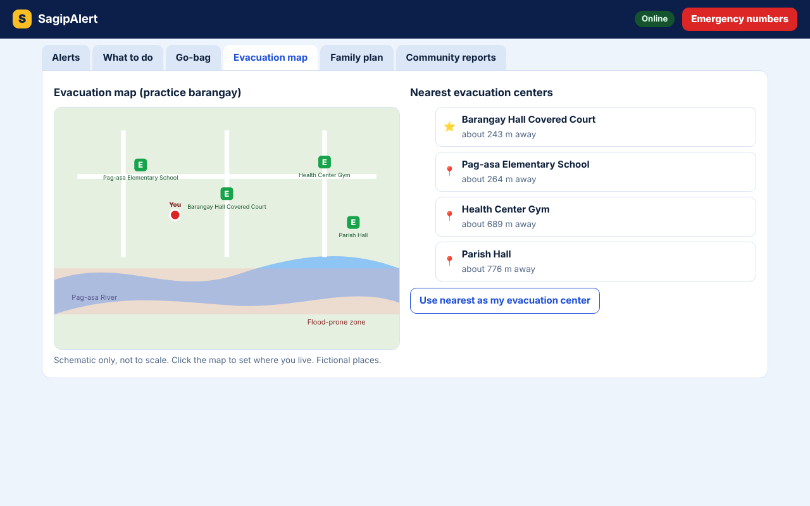
Public safety
Typhoon, flood and earthquake preparedness for a barangay, even offline.
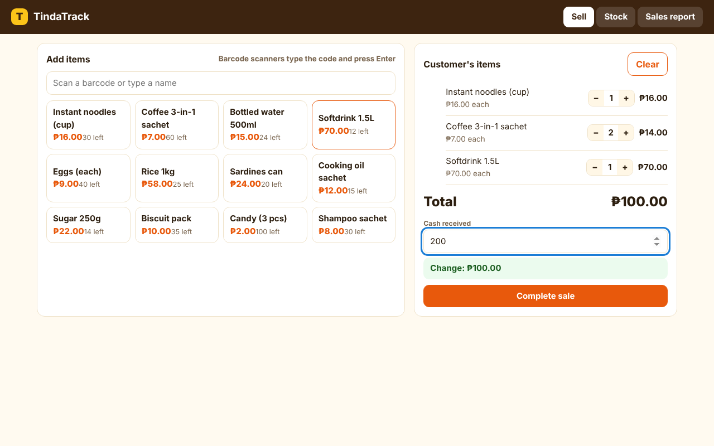
Small business
Sales and stock for a sari-sari store, with reorder suggestions.
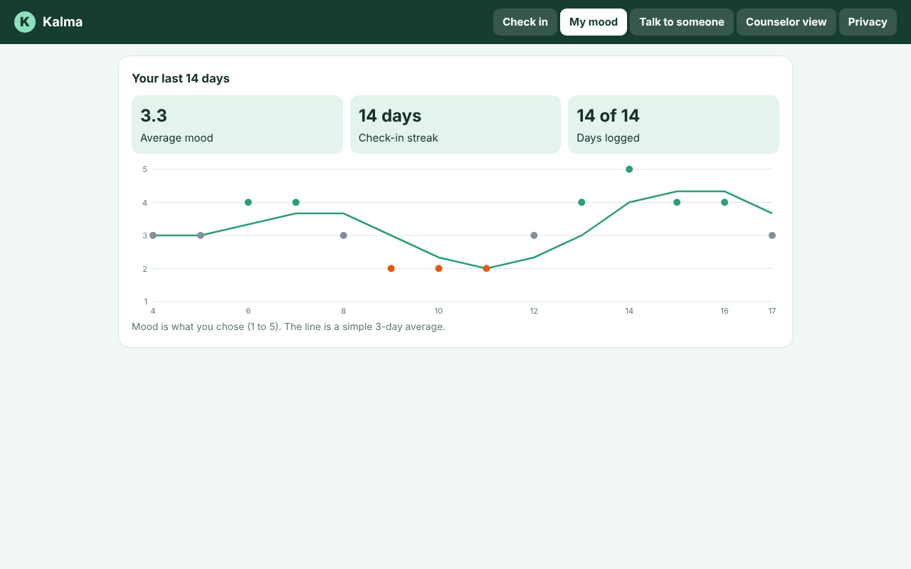
Student wellness
A private mood journal that suggests reaching out when a rough patch lasts.
Each skill is tied to a project that shows it.
Tap a skill to highlight the projects that use it.
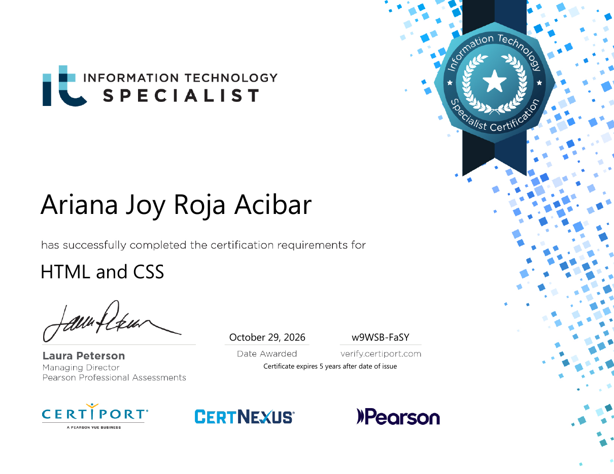
Certiport, a Pearson VUE business
To verify, enter the credential ID on the Certiport page.
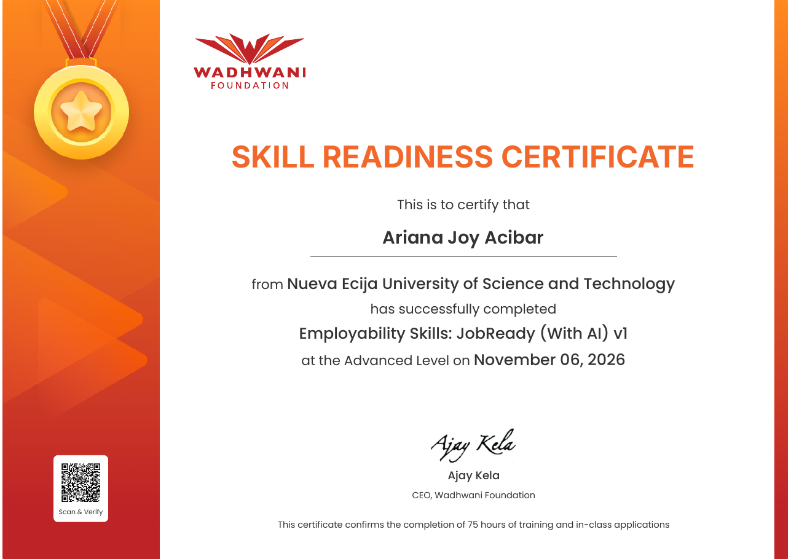
Wadhwani Foundation, through NEUST
The certificate has a QR code that verifies it.
SkillMatch, Talk Booth, FocusFlow, StudyMate, TapIn, ScamShield, SagipAlert, TindaTrack and Kalma.
IT Specialist exam, followed by JobReady (With AI) in November.
A job-matching platform for local jobseekers.
Where it all began.
I'm open to a junior developer role during my internship. Send me a message and I'll reply.
arianajoyacibar@gmail.com